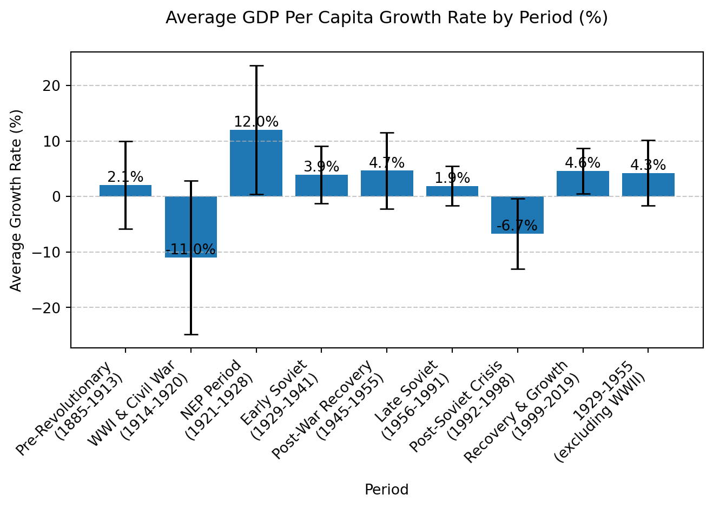

import pandas as pdimport matplotlib.pyplot as pltimport numpy as np# Read the Excel filedf = pd.read_excel("mpd2018.xlsx", sheet_name="Full data")# Filter for Former USSRussr_data = df[df['country'] =='Former USSR'].copy()# Sort by yearussr_data = ussr_data.sort_values('year')# Remove data before 1884ussr_data = ussr_data[ussr_data['year'] >=1884]# Calculate GDP (using population and GDP per capita)ussr_data['total_gdp'] = ussr_data['rgdpnapc'] * ussr_data['pop'] *1000# pop is in thousandsussr_data['gdp_growth'] = ussr_data['total_gdp'].pct_change(fill_method=None) *100# Define periodsperiods = [ (1885, 1913, "Pre-Revolutionary\n(1885-1913)"), (1914, 1920, "WWI & Civil War\n(1914-1920)"), (1921, 1928, "NEP Period\n(1921-1928)"), (1929, 1941, "Early Soviet\n(1929-1941)"),# (1941, 1945, "WWII\n(1941-1945)"), (1945, 1955, "Post-War Recovery\n(1945-1955)"), (1956, 1991, "Late Soviet\n(1956-1991)"), (1992, 1998, "Post-Soviet Crisis\n(1992-1998)"), (1999, 2019, "Recovery & Growth\n(1999-2019)")]# Calculate average growth for each periodperiod_averages = []for start_year, end_year, period_name in periods: mask = (ussr_data['year'] >= start_year) & (ussr_data['year'] <= end_year) avg_growth = ussr_data.loc[mask, 'gdp_growth'].mean() std_growth = ussr_data.loc[mask, 'gdp_growth'].std() n_years = mask.sum() period_averages.append({'period': period_name,'avg_growth': avg_growth,'std_growth': std_growth,'n_years': n_years,'start_year': start_year,'end_year': end_year })# Calculate special periods (1929-1955)mask_1929_1955 = (ussr_data['year'] >=1929) & (ussr_data['year'] <=1955)avg_1929_1955 = ussr_data.loc[mask_1929_1955, 'gdp_growth'].mean()std_1929_1955 = ussr_data.loc[mask_1929_1955, 'gdp_growth'].std()# Calculate 1929-1955 without 1941-1945mask_without_war = ( ((ussr_data['year'] >=1929) & (ussr_data['year'] <1941)) | ((ussr_data['year'] >1945) & (ussr_data['year'] <=1955)))avg_1929_1955_no_war = ussr_data.loc[mask_without_war, 'gdp_growth'].mean()std_1929_1955_no_war = ussr_data.loc[mask_without_war, 'gdp_growth'].std()# Add special periods to the list# period_averages.append({# 'period': '1929-1955\n(including WWII)',# 'avg_growth': avg_1929_1955,# 'std_growth': std_1929_1955,# 'n_years': mask_1929_1955.sum(),# 'start_year': 1929,# 'end_year': 1955# })period_averages.append({'period': '1929-1955\n(excluding WWII)','avg_growth': avg_1929_1955_no_war,'std_growth': std_1929_1955_no_war,'n_years': mask_without_war.sum(),'start_year': 1929,'end_year': 1955})# Create DataFrame for plottingdf_plot = pd.DataFrame(period_averages)
Code
# Create the bar plot with error barsplt.figure()bars = plt.bar(df_plot['period'], df_plot['avg_growth'], yerr=df_plot['std_growth'], capsize=5)# Customize the plotplt.title('Average GDP Growth Rate by Period (%)', pad=20)plt.xlabel('Period')plt.ylabel('Average Growth Rate (%)')plt.grid(True, axis='y', linestyle='--', alpha=0.7)plt.xticks(rotation=45, ha='right')# Add value labels on top of each barfor bar in bars: height = bar.get_height() plt.text(bar.get_x() + bar.get_width()/2., height,f'{height:.1f}%', ha='center', va='bottom')plt.tight_layout()plt.show()# Display the detailed statisticsprint("\nDetailed Statistics by Period")print("-"*40)for row in period_averages:print(f"\n{row['period']}:")print(f" Average Growth: {row['avg_growth']:.2f}%")print(f" Standard Deviation: {row['std_growth']:.2f}%")print(f" Number of Years: {row['n_years']}")

Average GDP Growth Rate by Period
Detailed Statistics by Period
----------------------------------------
Pre-Revolutionary
(1885-1913):
Average Growth: nan%
Standard Deviation: nan%
Number of Years: 29
WWI & Civil War
(1914-1920):
Average Growth: nan%
Standard Deviation: nan%
Number of Years: 7
NEP Period
(1921-1928):
Average Growth: 13.35%
Standard Deviation: 12.35%
Number of Years: 8
Early Soviet
(1929-1941):
Average Growth: 5.19%
Standard Deviation: 5.04%
Number of Years: 12
Post-War Recovery
(1945-1955):
Average Growth: 4.90%
Standard Deviation: 9.82%
Number of Years: 10
Late Soviet
(1956-1991):
Average Growth: 3.04%
Standard Deviation: 3.79%
Number of Years: 36
Post-Soviet Crisis
(1992-1998):
Average Growth: -6.69%
Standard Deviation: 6.24%
Number of Years: 7
Recovery & Growth
(1999-2019):
Average Growth: 4.62%
Standard Deviation: 3.73%
Number of Years: 18
1929-1955
(excluding WWII):
Average Growth: 5.06%
Standard Deviation: 7.39%
Number of Years: 22
Code
# Create a table with the statisticsstats_df = pd.DataFrame(period_averages)stats_df = stats_df[['period', 'avg_growth', 'std_growth', 'n_years']]stats_df.columns = ['Period', 'Average Growth (%)', 'Std Dev (%)', 'Years']display(stats_df.round(2))
Period
Average Growth (%)
Std Dev (%)
Years
0
Pre-Revolutionary\n(1885-1913)
NaN
NaN
29
1
WWI & Civil War\n(1914-1920)
NaN
NaN
7
2
NEP Period\n(1921-1928)
13.35
12.35
8
3
Early Soviet\n(1929-1941)
5.19
5.04
12
4
Post-War Recovery\n(1945-1955)
4.90
9.82
10
5
Late Soviet\n(1956-1991)
3.04
3.79
36
6
Post-Soviet Crisis\n(1992-1998)
-6.69
6.24
7
7
Recovery & Growth\n(1999-2019)
4.62
3.73
18
8
1929-1955\n(excluding WWII)
5.06
7.39
22
Source Code
---title: "Period Analysis"format: html: code-fold: true code-tools: true---```{python}import pandas as pdimport matplotlib.pyplot as pltimport numpy as np# Read the Excel filedf = pd.read_excel("mpd2018.xlsx", sheet_name="Full data")# Filter for Former USSRussr_data = df[df['country'] =='Former USSR'].copy()# Sort by yearussr_data = ussr_data.sort_values('year')# Remove data before 1884ussr_data = ussr_data[ussr_data['year'] >=1884]# Calculate GDP (using population and GDP per capita)ussr_data['total_gdp'] = ussr_data['rgdpnapc'] * ussr_data['pop'] *1000# pop is in thousandsussr_data['gdp_growth'] = ussr_data['total_gdp'].pct_change(fill_method=None) *100# Define periodsperiods = [ (1885, 1913, "Pre-Revolutionary\n(1885-1913)"), (1914, 1920, "WWI & Civil War\n(1914-1920)"), (1921, 1928, "NEP Period\n(1921-1928)"), (1929, 1941, "Early Soviet\n(1929-1941)"),# (1941, 1945, "WWII\n(1941-1945)"), (1945, 1955, "Post-War Recovery\n(1945-1955)"), (1956, 1991, "Late Soviet\n(1956-1991)"), (1992, 1998, "Post-Soviet Crisis\n(1992-1998)"), (1999, 2019, "Recovery & Growth\n(1999-2019)")]# Calculate average growth for each periodperiod_averages = []for start_year, end_year, period_name in periods: mask = (ussr_data['year'] >= start_year) & (ussr_data['year'] <= end_year) avg_growth = ussr_data.loc[mask, 'gdp_growth'].mean() std_growth = ussr_data.loc[mask, 'gdp_growth'].std() n_years = mask.sum() period_averages.append({'period': period_name,'avg_growth': avg_growth,'std_growth': std_growth,'n_years': n_years,'start_year': start_year,'end_year': end_year })# Calculate special periods (1929-1955)mask_1929_1955 = (ussr_data['year'] >=1929) & (ussr_data['year'] <=1955)avg_1929_1955 = ussr_data.loc[mask_1929_1955, 'gdp_growth'].mean()std_1929_1955 = ussr_data.loc[mask_1929_1955, 'gdp_growth'].std()# Calculate 1929-1955 without 1941-1945mask_without_war = ( ((ussr_data['year'] >=1929) & (ussr_data['year'] <1941)) | ((ussr_data['year'] >1945) & (ussr_data['year'] <=1955)))avg_1929_1955_no_war = ussr_data.loc[mask_without_war, 'gdp_growth'].mean()std_1929_1955_no_war = ussr_data.loc[mask_without_war, 'gdp_growth'].std()# Add special periods to the list# period_averages.append({# 'period': '1929-1955\n(including WWII)',# 'avg_growth': avg_1929_1955,# 'std_growth': std_1929_1955,# 'n_years': mask_1929_1955.sum(),# 'start_year': 1929,# 'end_year': 1955# })period_averages.append({'period': '1929-1955\n(excluding WWII)','avg_growth': avg_1929_1955_no_war,'std_growth': std_1929_1955_no_war,'n_years': mask_without_war.sum(),'start_year': 1929,'end_year': 1955})# Create DataFrame for plottingdf_plot = pd.DataFrame(period_averages)``````{python}#| fig-cap: "Average GDP Growth Rate by Period"# Create the bar plot with error barsplt.figure()bars = plt.bar(df_plot['period'], df_plot['avg_growth'], yerr=df_plot['std_growth'], capsize=5)# Customize the plotplt.title('Average GDP Growth Rate by Period (%)', pad=20)plt.xlabel('Period')plt.ylabel('Average Growth Rate (%)')plt.grid(True, axis='y', linestyle='--', alpha=0.7)plt.xticks(rotation=45, ha='right')# Add value labels on top of each barfor bar in bars: height = bar.get_height() plt.text(bar.get_x() + bar.get_width()/2., height,f'{height:.1f}%', ha='center', va='bottom')plt.tight_layout()plt.show()# Display the detailed statisticsprint("\nDetailed Statistics by Period")print("-"*40)for row in period_averages:print(f"\n{row['period']}:")print(f" Average Growth: {row['avg_growth']:.2f}%")print(f" Standard Deviation: {row['std_growth']:.2f}%")print(f" Number of Years: {row['n_years']}")``````{python}# Create a table with the statisticsstats_df = pd.DataFrame(period_averages)stats_df = stats_df[['period', 'avg_growth', 'std_growth', 'n_years']]stats_df.columns = ['Period', 'Average Growth (%)', 'Std Dev (%)', 'Years']display(stats_df.round(2))```